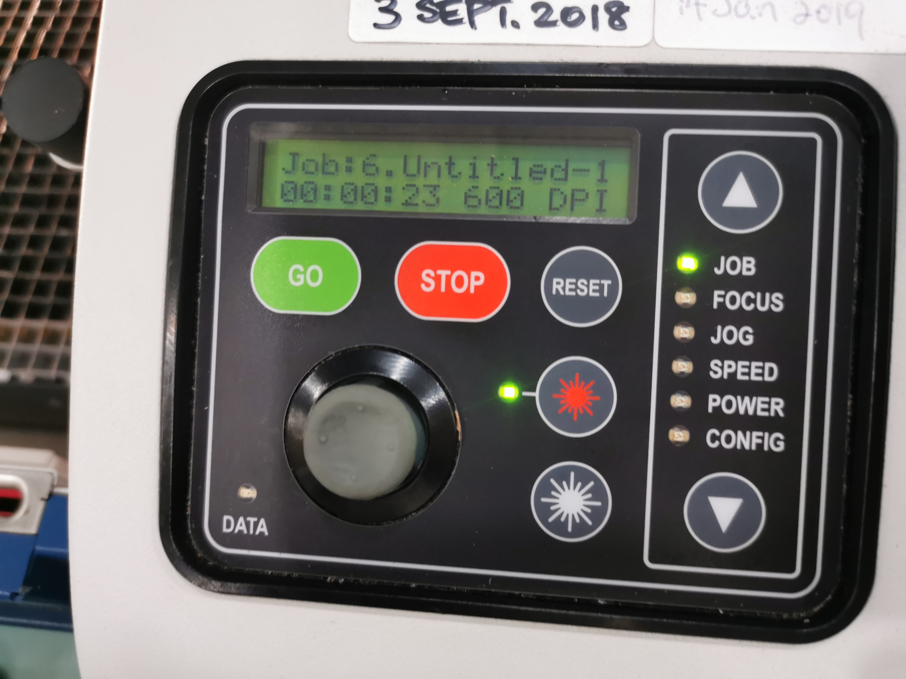

WEEK 7
Laser Cutting
Intro to Laser Cutting
Obtaining DXF profiles from Fusion 360
{kind=link}
{kind=link}
{kind=link}
Checking layout and prepare for Laser Cutting
| LibreCAD LibreCAD is an open source CAD drawing program. You can use it to create 2D profiles and save it to DXF files. It’s default file format is .DXF 1. In LibreCAD, open a new drawing File > New 2. Use File > Import > Block and select your .DXF file. 3. Keep adding the profiles. You can layout your laser cut profile using this software. 4. Remember that any line/graphic drawn will be cut out by the laser cutter. 5. Check your profiles, save your work as another DXF file e.g. layout.dxf 6. You can do a single import into CorelDraw. DXF file for laser cutting of box design |
{kind=link}
Laser Cutting
{kind=link}
 |
Settings before printing 1.Import the DXF file that contains the layout of the box which should have completed before arriving (File > Import) 2. Use File > Import > Block and select your .DXF file. 3. Ensure that the units are Metric and the Scaling is 1:1. Select the lines that are meant to be cut as "Hairline". 4. Click print once you are ready to do so, and click "Configure" to set the Power, Speed and frequency for Vector and Combined seperately. |
|  | Settings before printing 1. On the laser cutter, use the arrow keys to select the different functions 3. Press go with cover being open up to check the cutting preview (When cover is up, press go will not start cutting; When cover down, press GO will start cutting) 4. Once finish checking, may move down the cover and start cutting. |
{kind=link}